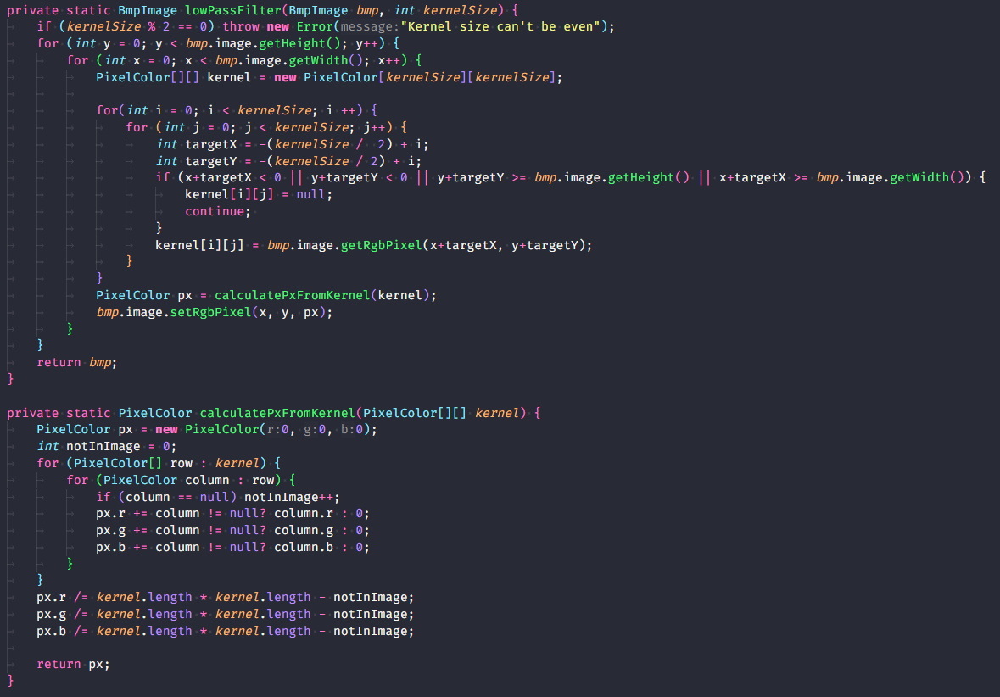
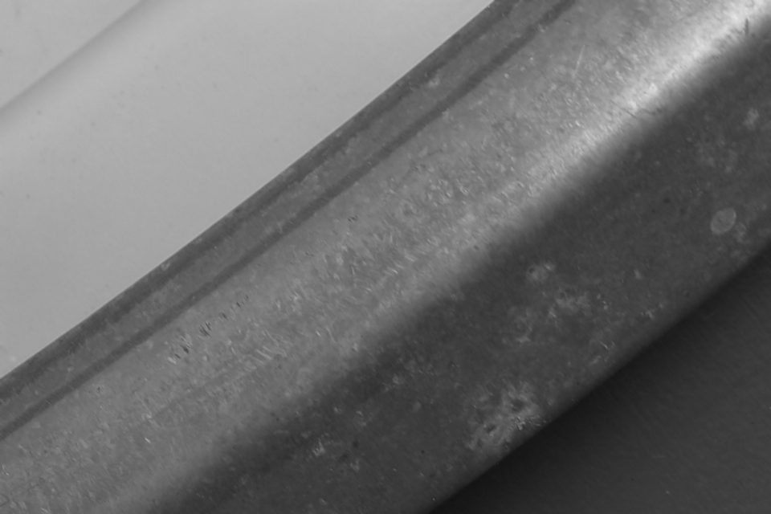

Aufgabe 1.a
Aufgabestellung:
Erweitere bmp_io so, dass ein Filter mit einem Kernel von 3x3 Pixeln angewandt werden kann. Beim Mittelwertfilter wird ein Zielpixel aus dem Mittelwert aller Pixel im Kernel im Originalbild berechnet. Beschreibe die Wirkung des Filters auf deine Bilder!
Lösung:


Die Bilder werden durch den Tiefpassfilter zunehmend unscharf. Dies kann ggf. auch positiv sein, da es dadurch ebenfalls Unebenheiten im Bild rausfiltert.